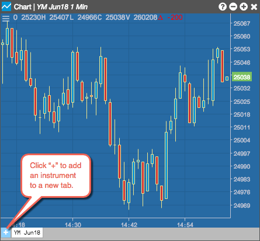

Instruments can be added to the chart using the Chart menu or the tab at the bottom of the widget. Multiple instruments can be added to separate tabs in the same chart.
When opening a new chart from the widgets menu, you'll need to add an instrument to the chart. Chart widgets opened from the Search Instruments box or Market Explorer are already seeded with the selected instrument. Multiple charts can be opened in the same workspace.
Note: You can change the current instrument using the Search Instruments box, which automatically appears when you start typing in a chart. You can also change the current instrument using the Search Instruments box or Market Explorer opened from the Chart menu.
To add an instrument to a chart:
- Click (the chart menu icon) in the top left corner of the chart and click (the Search Instruments icon) in the Chart menu.
Search for an instrument or click Explore to find and click on the instrument to add it to the chart.

You can also click the "+" on the tab at the bottom of the chart to open the Search Instruments box and
Market Explorer. Use the Tab to add an instrument to a new chart or to add multiple instruments to separate tabs.
